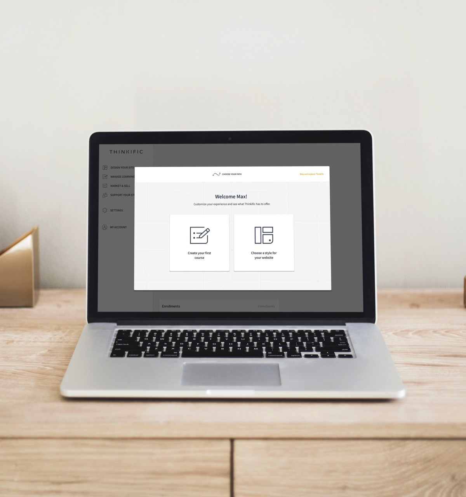

Create an onboarding experience for new users signing up to the platform.
Thinkific is a complex platform that didn’t effectively onboard its users. My role involved figuring out what would bring the most value to users when introducing them to the platform while educating them on its key features. Important metrics to measure included paid conversion rates and retention rates.
Improve engagement by showing users how they can be successful with the platform’s main functions.
Research from watching many users sign up for the platform and take their first steps showed that they didn’t know the most important things they should be doing. A sense of delight and guidance to meaningful accomplishments was missing. I realized this was crucial in maintaining customers and increasing their chance of success with the platform.
A key part of onboarding was to effectively communicate the main function of the platform. In this case there were two — creating a course and designing a website. Based on some user tests, we decided to create an interactive onboarding modal upon entering the platform that would incorporate these key functions and get the user to make some basic decisions.


Provide sense of achievement and encourage next steps.
User research and tests showed us that people wanted guidance upon entering the platform. Tasks were introduced to provide a sense of accomplishment and guide the user to important next steps.

After a couple of months watching users interact with the new onboarding flow, a second iteration was designed. Based on further research and user tests, improvements were made to the user flow and a “choose your own path” style of onboarding was implemented.